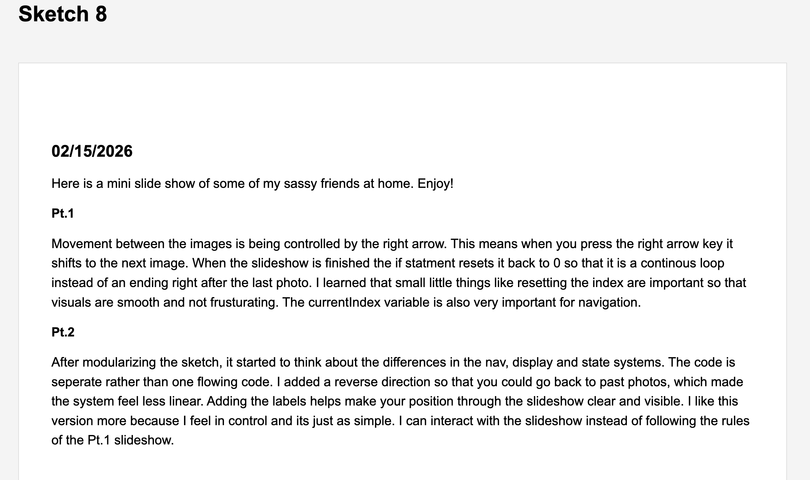
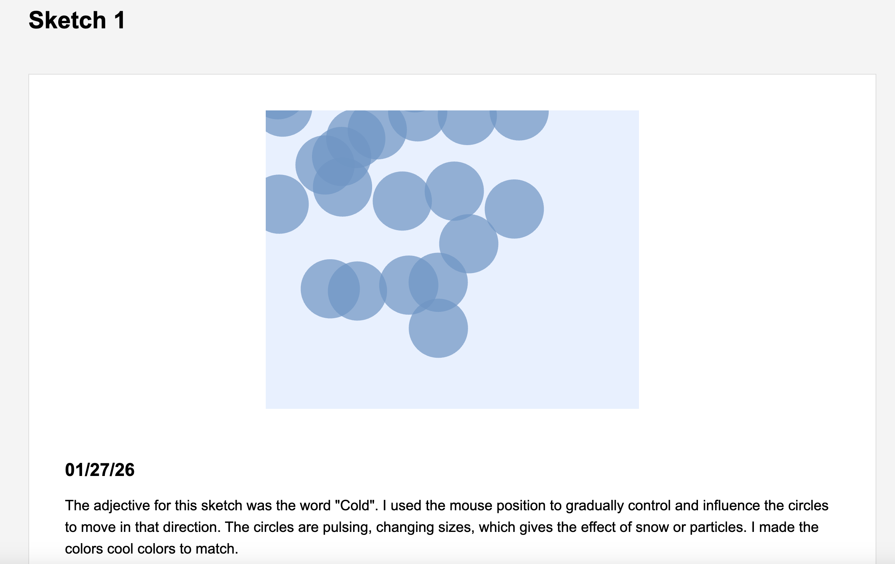
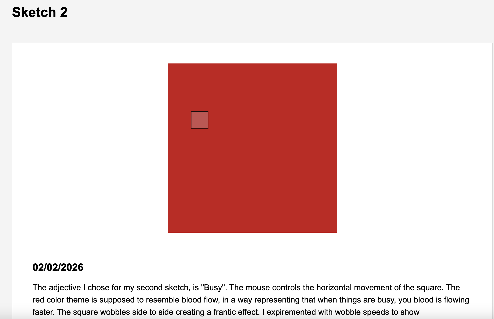
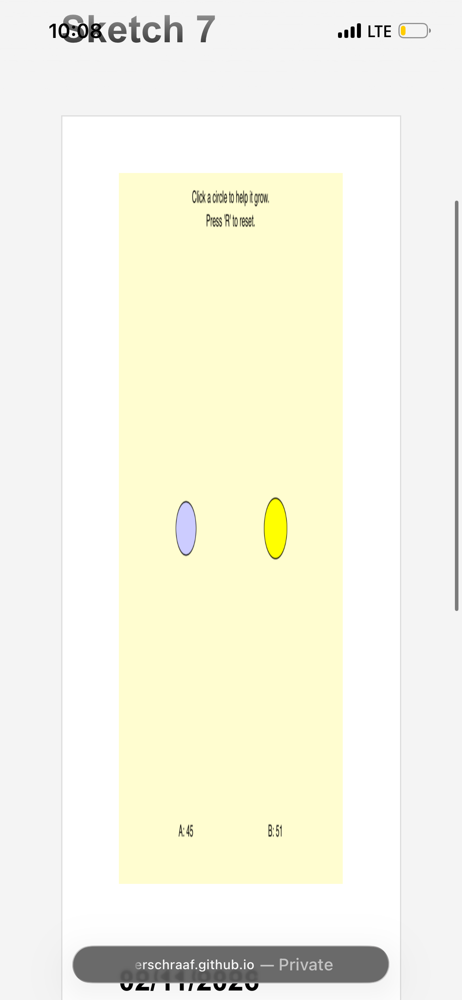
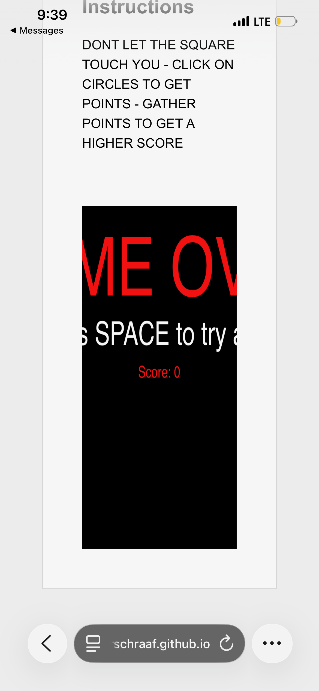

For this phase I focused on translating the resot of my figma interface system into the actual code. My goal was not to perfectly recreate the prototype visually but to preserve the structure I had made in the prototype. I mostly focused on the desktop version while somewhat attempting the mobile version.
One of the most clean trnalations from figma was the hierarchy system. Since I had already made a clean layout and established my H1-H4 structure. The navigation bar, page titles, instructions, paragraph text, etc, are all structured into sections that are consistent on every page.



The navigation systen was honestly my favorite part. It is so simple and clean, very minimalistic. My homepage links are all successfully connected to the info, readings and sketches pages. All the pages are connected in order which helped reinforce the structural flow of my system. The consistent nav bar across the pages created a unified system overall, which I established in the figma
I had several things break on me during the implemetation phases though. Especially whule I was trying to link my CSS. One of my biggest issues was realizing that the figma layout is static vs the fluid browser layouts. This caused so many unexpected layout problems, specifically with the nav bar and the sketch containers. Not to mention the effect it had on the mobile version. At first it was not working out in my favor, I didnt think about taking screen shots but all of my boxes were on top of eachother in the mobile bersion. I got that fixed though.
At one point, the "readings" button on the navigation bar was being cut off the screen. This was confusing because I assumed spacing would remain stable across all the pages and window sizes because of figma. In the code, padding, flex spacing, and width all are factors I had to work with. It took me a while to get the structuce right but eventially flex-wrap saved my life and restructured the nav bar. Specifically on the mobile version aswell, it stacked the bar vertically so that it wasnt pushed all the way off to the right.
The sketches also exposed several strucutural assumptions I had. At first, the sketch would distort and stretch according the the browser size. Especially when resized. It would mess it all up and it would not go back to normal. THis was annoying but I did some research about scaling and responisvness. Eventually I used respinsice canvas sizing tied to windowWidth/Height/Resized to help me resize my canvases. One thing though is that on mobile or shrunked desktop windows, the canvases are so small that they shrink the sketches. THis is something I need to further look into...


I would say that the mobile adaptation part of this assignment was the most difficult part. Before I tried the mobile media part, I didnt fully understand how the different window sizes can effec tthe structure of the page. I thought that my mobile version was simply going to be a compressed version of the desktop. THis made the navigation cramped and difficutl to read. Through expirementation and trial and error, I realized that the mobile design is not a "smaller desktop". I tried the horizontal but it was just too cramped so the vertical scroll and stacked version was the logical way to structure the layout, especially for the containers and the navigation.
With more time I would continue refining the responsive sysrtem across all the page and make more shared wrappers / spacing variables. I would also improve consistency across the desktop and mobile versions. Right now the system functions structurally but there are still little things that feel improvised rather than intentional.